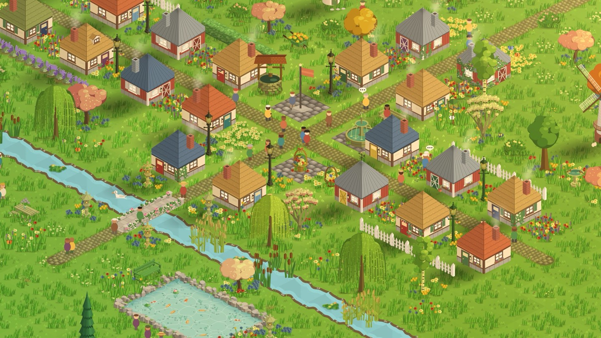

A walking game that won't make you feel guilty
No streaks to lose, no timers, no ads. If life gets busy, your town waits, and every step you walked still counts.

A lot of walking apps run on guilt. Miss a day and a streak resets, a pet looks sad, a notification asks where you went. I wanted StepHaven to be the opposite: somewhere you come back to because it's nice, not because you're afraid of what you'll lose.
Is there a walking game with no streaks or pressure?
Yes. StepHaven, the cozy walking game for iPhone, has no streak that resets, no energy timers and no ads, and every step you walked still counts when you come back.
StepHaven has no streak that resets. The closest thing is the daily present by the town flag, which gets a little better over a week. Miss a day and the week steps back one day, not to the start. Nothing you've built wilts, breaks or goes away while you're gone.
What happens if I don't open it for a while?
Your steps keep counting. StepHaven reads them from Apple Health, so a walk you took on a day you never opened the app is still yours to spend when you come back. Come back after a few days away and your next 5,000 steps earn double XP toward your next level, as a welcome back.
Your level never goes down, and points never expire.
No timers, no ads, nothing to buy your way past
There are no energy bars and no waiting to build. If you've walked for it, you can place it. There are no ads at all. And steps can't be bought with money, so nobody is ahead of you because they paid.
Notifications you can turn off
StepHaven only sends a few kinds of note, such as a friend building in a town you share, a booster about to end, or today's present waiting. The present reminder stops after three unopened evenings rather than piling up. If you're away, you'll get one note after three days saying your next walk counts double, and one more after a week. After that, nothing. Each kind has its own switch in Settings, and one switch turns them all off.
The few things that come and go
To be fair about it: some things are only around for a while. A travelling fair visits for a day at each full moon, a merchant drops by every few days, and some item packs are on sale for a season. They're there to make an ordinary day nicer when you happen to catch them, not to punish you when you don't.
StepHaven: Cozy Town Builder
Free on iPhone. No ads, and your steps stay on your phone.
Download on theApp Store